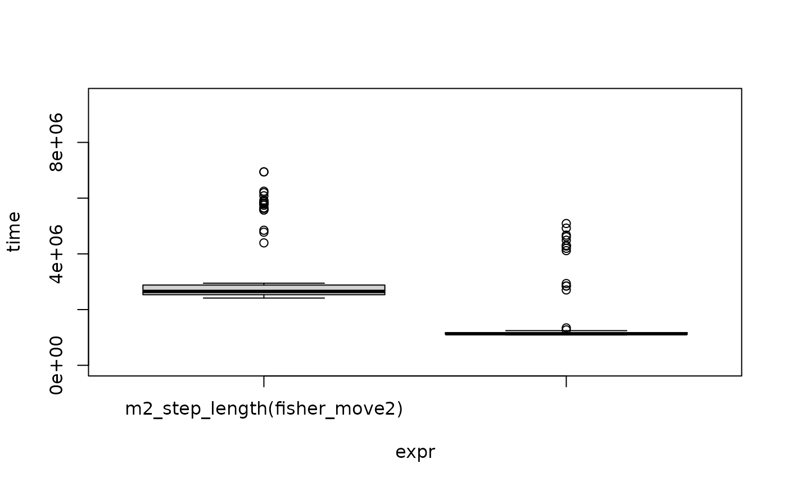

Example of Trackframe vs move2 performance
Brock
2025-12-01
Source:vignettes/performance.Rmd
performance.RmdPerformance
trackframe enables you to build performant functions without sacrificing usability and safety. In this vignette, we show how a developer could benefit from using the trackframe package to write fast functions for analyzing animal movement data.
(Note: For more information about the advantages of
trackframe (beyond performance considerations), see
vignette("why_trackframe").)
Usability vs performance tradeoff with sf based data frames
As a developer building a function that accepts movement data in
sf format (e.g. a move2 or sftrack dataframe), you have the
choice of whether the function should accept the sf
dataframe as a whole or the coordinate matrix (output of
sf::st_coordinates).
To demonstrate this, below are shown two functions that calculate the step length distances between each successive coordinate location of an individual in a move2 dataframe.
The first function (m2_step_length) takes specifically a
move2 object as input, and thus must first unpack the coordinate list
column into a 2-column matrix, then perform the distance calculations.
The second function (coords_mat_step_length) takes a
2-column matrix of coordinates and a vector of IDs as input, and thus
requires the user to first decompose the move2 object into these two
objects.
library(move2)
library(sf)
# accepts move2 object
m2_step_length <- function(mt_df) {
coords <- sf::st_coordinates(mt_df) # convert to matrix inside the function
x <- c(sqrt(diff(coords[, 1])^2 + diff(coords[, 2])^2), NA)
x[diff(as.numeric(mt_track_id(mt_df))) != 0] <- NA
x
}
# accepts coordinates matrix and ids vector
coords_mat_step_length <- function(coords, ids) {
x <- c(sqrt(diff(coords[, 1])^2 + diff(coords[, 2])^2), NA)
x[diff(as.numeric(ids)) != 0] <- NA
x
}From the user’s perspective, the first option is the simplest as they don’t have to first decompose the move2 object, using these extra two lines of code:
coords <- sf::st_coordinates(mt_df)
ids <- move2::mt_track_id(mt_df)As the author of the function, the first option also has the advantage that you can check other aspects of the data frame. For example, you could check the crs to verify that the coordinates are projected, or you could validate that the coordinates are correctly ordered by time and individual id before performing the distance calculation. With the second option, it’s not possible to write those checks into the step length function, and instead, the user has to closely read the documentation to ensure that their input data satisfies the necessary criteria.
However, the second option has the advantage that it does not have
the overhead of running st::coordinates. Because this
function is essentially unpacking a list, the performance cost can be
non-negligible, especially for larger data frames.
We can demonstrate this using the move2 example data from fishers (small carnivorous mammals native to North America).
Load the data, project the coordinates, and drop rows with missing coordinates.
filter_nonempty <- function(x) x[!sf::st_is_empty(x), ]
fisher_move2 <- mt_read(mt_example()) |>
sf::st_transform(32618) |>
filter_nonempty()Now we can run both of the *_step_length functions in
microbenchmark to compare the processing time.
##
## Attaching package: 'microbenchmark'## The following object is masked _by_ '.GlobalEnv':
##
## microbenchmark
# decompose fisher_move2 so it's ready for the coords_mat_step_length function
fisher_coords <- sf::st_coordinates(fisher_move2)
fisher_ids <- move2::mt_track_id(fisher_move2)
# run microbenchmark function to get processing times
m <- microbenchmark(
m2_step_length(fisher_move2),
coords_mat_step_length(fisher_coords, fisher_ids),
check = "equal"
)
summary(m)## expr min lq mean
## 1 m2_step_length(fisher_move2) 2.413486 2.534107 3.257586
## 2 coords_mat_step_length(fisher_coords, fisher_ids) 1.089505 1.116409 1.574627
## median uq max neval
## 1 2.651992 2.880799 6.944957 100
## 2 1.133802 1.173501 5.089382 100
# Limit plotting to 2*90th percentile so outliers don't dominate the plot
ymax <- function(y) 2 * sort(y)[as.integer(.90 * length(y))]
plot(m, ylim = c(0, ymax(m$time)))
The second function (coords_mat_step_length) is clearly
faster, though it requires the preceeding steps to decompose the
original move2 object.
Enter trackframe: The best of both worlds!
This is where the trackframe package can be extremely useful.
The coordinate columns of a trackframe object can be
easily specified and quickly accessed. As a developer, this means that
you can write functions that take the entire data object (including
coordinates, timestamps, crs, track ids, etc), without sacrificing
processing speed: the relevant columns can be accessed without having to
extract them from lists.
This saves your user from having to ensure that they are correctly decomposing their movement data object before running your functions, and it allows you to access other aspects of the data within the functions (for example, to first sort it or check the crs).
Here is the trackframe version of the step length function:
library(trackframe)
tf_step_length <- function(tf) {
x <- c(sqrt(diff(easting(tf))^ 2 + diff(northing(tf))^2), NA)
x[diff(as.numeric(id(tf))) != 0] <- NA
x
}Like the first option above (m2_step_length), this
function accepts one object from which coordinates and track ids (as
well as crs and timestamp) can be extracted. However, the extraction is
much less costly:
fisher_tf <- as.trackframe(fisher_move2)
m <- microbenchmark(
m2_step_length(fisher_move2),
coords_mat_step_length(fisher_coords, fisher_ids),
tf_step_length(fisher_tf),
check = "equal"
)
summary(m)## expr min lq mean
## 1 m2_step_length(fisher_move2) 2.511058 2.658825 4.481762
## 2 coords_mat_step_length(fisher_coords, fisher_ids) 1.087991 1.112983 1.903755
## 3 tf_step_length(fisher_tf) 1.001660 1.037853 1.705067
## median uq max neval
## 1 2.734185 2.867503 111.486123 100
## 2 1.137769 1.189075 6.692215 100
## 3 1.069156 1.132580 5.760134 100The trackframe step length function (tf_step_length) is
much faster than the move2 step length function
(m2_step_length), while retaining all of the benefits of a
function that takes the entire data object as input. The trackframe step
length function is even slightly faster than the function requiring the
decomposed data (coords_mat_step_length).
For more information about the advantages of
trackframe (beyond performance considerations), see
vignette("why_trackframe").